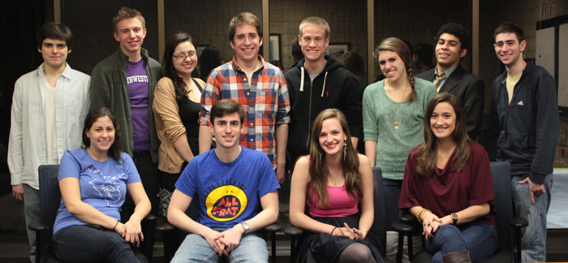
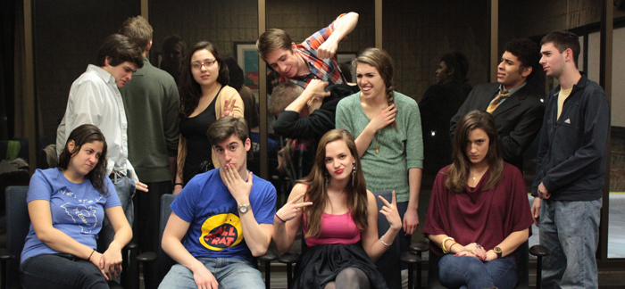
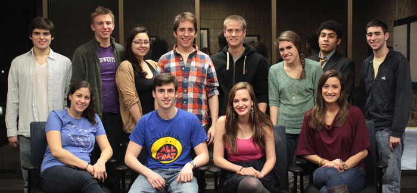
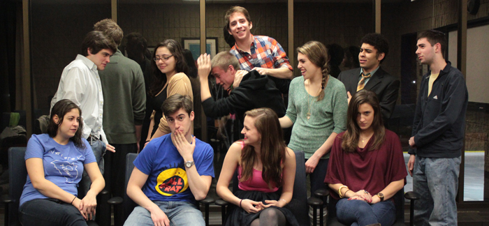

Applause for a Cause is a philanthropic production company that
writes, produces, edits, directs, and premieres a feature film (90
minutes or longer) every year in order to raise money for that year’s
selected charity. Applause for a Cause was founded on the idea that we
can do what we love to do and benefit a deserving beneficiary in the
process.
The Story
It all began in the fall of 2010 when two Northwestern University
students decided that they wanted to push the boundaries of student
filmmaking. Sarah Jane Inwards and Alec Ziff embarked on a mission
to make a feature-length film (90 minutes or longer) and choose a
charity that would receive all of the proceeds. While the process
would be strenuous, that did not stop them. Applause for a Cause was
born.
With the help of NU Channel 1, Inwards and Ziff led a team of 70 students (from
freshman to seniors) who acted in, wrote, produced, edited, and directed
Applause for a Cause's first feature. Over 300 moviegoers attended the red
carpet premiere of RUΣH on May 20th, 2011. Applause raised over $1,500 for the
Ronald McDonald House near Memorial Hospital in Chicago.
But that was only the beginning.
Applause for a Cause is here to stay, currently in production on its second
feature, Experience For Beginners, the proceeds from which will benefit the
Make-A-Wish Foundation. Applause now encompasses more students, a larger budget,
and its own equipment. Yet Applause’s vision remains the same: students have the
power to create professional, industry-quality films while doing so for a
greater good.




Applause For a Cause 2011-2012 exec board
The Films
RUΣH 2011
Applause for a Cause produced the feature film RUΣH in the
2010-2011 academic year. RUΣH is a comedy about six college freshman
rushing fraternities and sororities, only to have their relationships
change forever. Over 300 people attended the red carpet premiere of
RUΣH on May 20th, 2011 and helped raise $1,500 for the Ronald McDonald
House near Children’s Memorial Hospital in Chicago.
Applause for a Cause is producing the film Experience for
Beginners in the 2011-2012 academic year. Experience For Beginners
is a dramedy about a woman mourning the death of her girlfriend
whose life is turned upside down when a friend from high school, now
pregnant, lands on her doorstep. Experience For Beginners premieres
on May 18th-19th, 2012 and will benefit the Make-a-Wish Foundation.
We hope to see you there!
Cast & Crew
Crew of Experience For Beginners
Sarah Jane Inwards
Co-director/producer
SJ is proudly from Minnesota and has been in Applause for a Cause since 2008. SJ has worn a fake pregnancy belly on two occasions (being Juno and Bristol Palin) and sympathizes with Julia because those things are hot. SJ loves the Make a Wish Foundation's mission and can't wait to raise money to further their amazing work! SJ is so pumped to be working with returning Applause members from last year and equally excited to get to know the new members. She is also pumped to bust out her prom dress again for this year's premiere.
Alec Ziff
Co-director/producer
Alec Ziff is a junior Film major at Northwestern University. Alec spent the summer of 2011 in Los Angeles writing and developing original television pilots that are currently being pitched to agencies. While not on film sets Alec is watching films, playing hockey, or cheering on the Patriots and New Jersey Devils. Alec is very excited to co-direct Applause's 2011-2012 feature film, Experience For Beginners, this winter.
Brian Lasman
Co-financial Producer
Hailing from the Boston area, Brian is a freshman who is super pumped to be working with the budget and finances for this film. He has really no idea what he wants to do with his life after college, so don't ask (but ideas would be appreciated). Brian is an obsessive fan of reality T.V. and much to the dismay of pretty much everyone, he love talking about it, so hit him up!
Amy Reed
Co-financial Producer
Amy Reed is a junior studying Radio/Television/Film and Creative Writing for the Media. She is excited to be a co-financial producer for Applause for a Cause this year! Other than working on this great feature, she is a producer for another Northwestern student film, a co-coordinator for the volunteer organization Project Eye to Eye, and a member of the Titanic Players team Floozy Newt.
Rachel Vrabec
Legal Producer
Rachel is a Junior studying Political Science and IMC who has a passion for scouting film locations. She was a part of Applause for A Cause last year and is excited to be back for another year.
Colton Maddox
Director of Photography
I'm a sophomore from Plymouth, Indiana majoring in Radio/TV/Film. I've had the opportunity to work on the sets of numerous short films here at Northwestern, but Experience For Beginners will be my first chance to work on the set of a feature. I'm sure it will be no walk in the park, but if I said I'd rather spend my Fridays, Saturdays, and Sundays doing anything other than making movies, I'd be lying.
Tom Schimandle
Director of Photography
Tom Shimandle is a junior RTVF and Economics major. He enjoys overanalyzing TV comedies, taking long showers, and loudly rapping along to contemporary hip-hop. He also enjoys sarcasm and being inappropriate. He thinks he's hilarious. Tom is thrilled to have the opportunity to be Director of Photography for Experience For Beginners.
Amina Dreessen
Assistant Director
Amina Dreessen, assistant director, is a freelance travel guide and non-practicing vegetarian. Her film-directing experience includes directing a ten minute absurdist play in high school and starring in spy films co-produced by her brother at the age of 7. She loves movies and hates fatal illnesses that affect children.
Max Kelly
Unit Production Manager
Maxwell Kelley is an aspiring film maker from Orange County, California. He has produced 4 short films and 2 webseries at Northwestern University, but is excited to be working on his first feature length film. He's super stoked to be working with SJ and Alec to do something special for the kids.
Ryan Anderson
Sound Designer
Ryan has been working with sound for almost his entire life and has a wide background in its different applications. Throughout high school and middle school he was the sound designer for all school theater productions, often with two people working under him. This lead to audio for video. He has worked with various New York metropolitan area companies on various documentaries. He also has experience with larger scale live audio productions. Ryan also has an interest in nature photography, sailing, and biology which to many people’s surprise he is majoring in.
Kenny Zhao
Music Arranger
Born in the barely notable town of Paris, TN, Kenny Zhao fostered a love for sound and music that began with competitive classical piano and has since branched out into the glamorous world of composition and sound design. Composing and designing in the fields of theater, film, and just plain art for art's sake, Kenny's listening interests range from garage rock to commercialized pop, to raw electronic, to the sound of his own voice through a good set of headphones. In his free time Kenny enjoys rewatching episodes of Adventure Time and drinking to life-threatening excess.
Sam Hazlett
Head Editor
Sam is a Junior Film Major from New Jersey. He wants to be a writer and director in Hollywood. In high school, he decided to quit the sports teams and direct, write, star in, and edit a two hour action movie, which he eventually screened for a bunch of people at the end of his senior year. Experience For Beginners is the fourth feature film of which he is the head editor.
Carlie Dobkin
Production Design
Carlie Dobkin is an RTVF Freshman who is excited to be working on her first set as a member of the Production Design team. She resides in the boring town of Buffalo Grove, IL and went to Northwestern to pursue her passion for television. She is obsessed with TV and has probably twenty series recordings in her DVR. Carlie is a spoiler fanatic and an aspiring writer who hopes to follow in the footsteps of Julie Plec, one of the executive producers and writers of The Vampire Diaries or be the next Kristin Dos Santos of E!Online. Carlie is also a gymnast and a member of the Spirit Squad as a cheerleader for NU.
Crystal Kim
Production Designer
Crystal Kim is a sophomore RTVF and Art Theory and Practice major. She is a Korean American, Georgian, Christian, artist, musician, dreamer, and more.
Sean Gransee
Publicity Head
Sean is a sophomore computer science major from the suburbs of Chicago. He got involved with Applause For a Cause last year as an assistant editor, and he's back for another year of excitement as the publicity head.
Ellie Schultz
Beneficiary Relations
Ellie Schultz is a member of Northwestern's class of 2014 and majoring in Psychology. She hails from Dallas, TX and couldn't be happier to now be in a place where there are four distinct seasons. Ellie is PUMPED to enter her first year of involvement with Applause for a Cause as its Beneficiary Relations chair. WAHOO helping others!!!
David Marrero
Assistant Editor
I'm David, freshman, from The Bronx, NY, and I am super duper excited to edit the movie!
Kara Reddy
Assistant Editor
Kara Reddy is an RTVF junior, hoping to become a writer and director. She enjoys listening to music (particularly film scores, indie rock, and electronic) reading (her favorite authors are currently JK Rowling and Jorge Luis Borges) and knitting. While she has worked on several short film sets before, she has never worked on a feature length film and is excited for the prospect of helping to make one :D
Emily Ryles
Script Supervisor
Emily is a proud citizen of the bay area. Her favorite color is glitter and loves coloring. She is a communication studies major and a member of Elder Residential Community.
Joe Deng
Assistant Editor
Joe Deng grew up in a quiet neighborhood. One day he realized he wanted to explore the world and thus began an incredible adventure. His current location is Northwestern University where he studies psychology, film, and pre-med. He hopes his journey takes him to the moon someday.
Becky Canfield
Assistant Editor
Becky Canfield is a freshman biology major hailing from St. Louis, Missouri. She aspires to go into the medical field after graduating. She is excited to be working on a set for the very first time and would like to thank the Applause for a Cause exec board for the opportunity.
Cory Ryncarz
Assistant Editor
Coming to you from Texas, I'm Cory and am an avid follower (and contributor!) of films, football and (insert groans) video games. Applause for a Cause attracted me because it not only offers a chance to learn while working on a film, but I can also help others in the process. In terms of lavish dreams, I just want to someday find myself in a comfortable, respectable situation where I can creatively influence media that can inspire the minds and curiosity of others in the way it has for me.
Nicole Borden
Associate Producer
Nicole Borden is a Northwestern RTVF freshman, originally from Long Island, New York. This is her first time working on a feature film and she couldn't be happier to be apart of the Applause for a Cause team.
John Buell
Assistant Director, Boom Operator
John Buell is a film major at Northwestern University. Raised in the great state of Ohio, he enjoys writing in his spare time and one day hopes to shun the real world and become a goat farmer in Iceland.
Cast of Experience For Beginners
Dulcinee DeGuere
Grace
Dulcinee was born in San Francisco, CA and later moved to Los Angeles to accommodate her dad's job as a screenwriter/show-runner in Hollywood. She started performing at a very young age, in both musical and theatrical settings. During her time at boarding school, she kept singing and acting at every opportunity she could get her hands on. Now an RTVF major, she's thrilled to be learning more about film, the medium in which she hopes to pursue her artistic goals. She's ecstatic to be working on Experience For Beginners and to merge her love for acting and film!
Elsa Gay
Annika
Born and raised in Vancouver, Canada, Elsa has loved coming to Northwestern University to study theatre. Her inspiring experience in the 2nd grade Christmas play motivated her to pursue acting and she has been learning about theatre ever since. Elsa is so thankful to be a part of Experience For Beginners and honoured to work with Applause for a Cause.
Chad Eschman
Jason
Chad Eschman is an Northwestern MFA student in Writing for the Screen and Stage. He is a founding member and former Co-Artistic Director of Cardboard Box Theatre Project, a company focused on ensemble creation of new works for the stage. Chad is originally from the Bay Area of California.
Natalie Houchins
Jenna
Natalie Houchins is a Sophomore from Austin, Texas double majoring in Theatre and Gender Studies. This is her first time appearing in a film at Northwestern. In addition to student theatre, Natalie is also involved in Greek life, Women's Club Rugby, and leading workshops at the Women's Center. She would like to thank her family, friends, and Pat for their love and support. Go 'Cats!